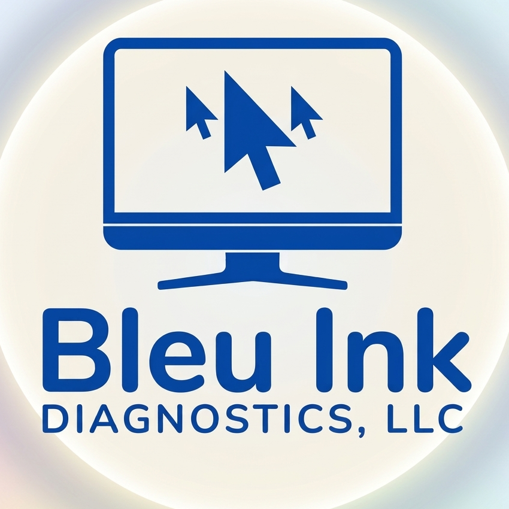
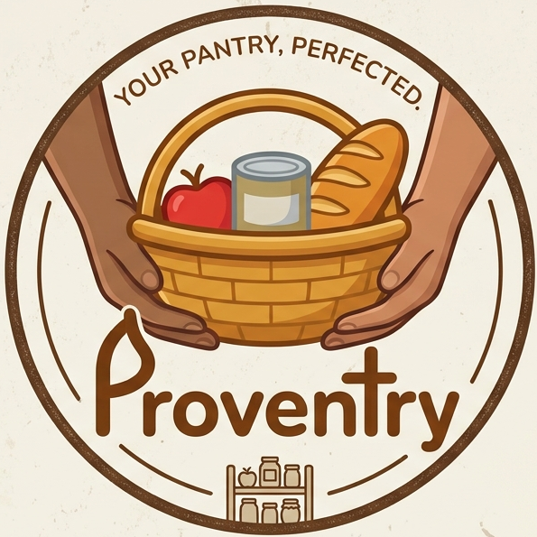

Blue Ink DiagnosticsBlue Ink Diagnostics is a small software studio. Our first product, Provantry, helps people keep track of what's actually in their kitchen.

Scan groceries as you put them away, track expiration dates, and always know what's on hand — so you stop buying duplicates and stop throwing food out.
Learn more →